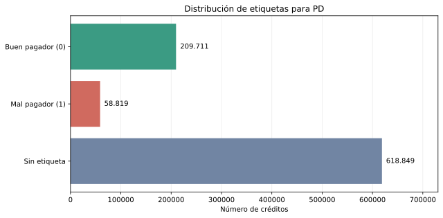
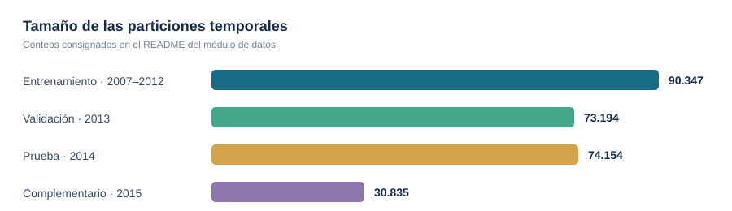
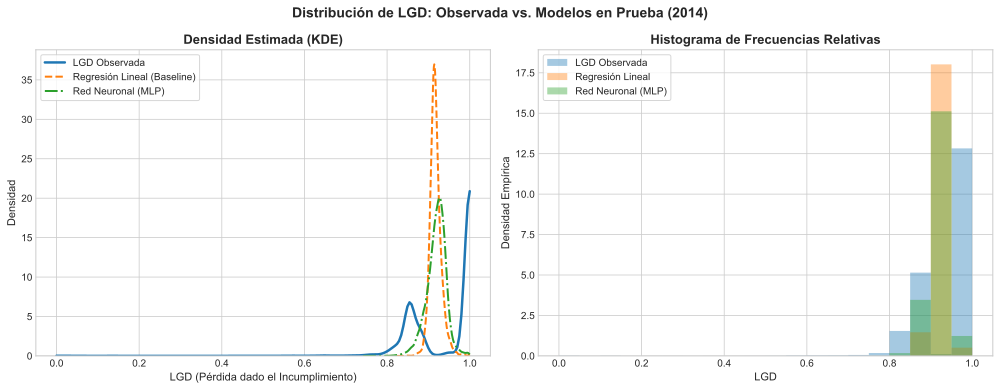
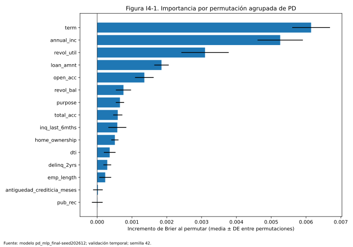
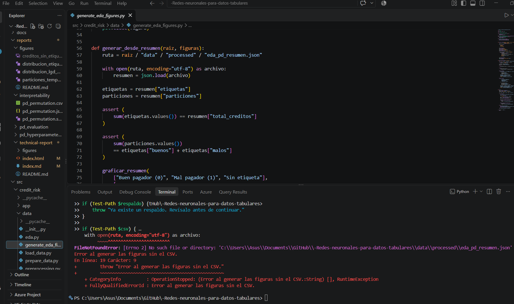

Reporte técnico · Proyecto académico
Riesgo de crédito con redes neuronales para datos tabulares
Estimación de la probabilidad de incumplimiento (PD) y la pérdida dado incumplimiento (LGD), con modelos de aprendizaje automático, una scorecard y una aplicación web.
Integrantes
-
Nicole Guaranguay Datos y análisis
-
Nicolas Ruiz Clasificación: probabilidad de incumplimiento (PD)
-
Sara Acevedo Regresión: pérdida dado incumplimiento (LGD)
-
Sebastián Cataño Scorecard, interpretación y aplicación web
-
Ivan Dario Gomez Cabrera Integración, reproducibilidad y reporte
1. Preparación de datos para PD
1.1 Conjunto de datos y objetivo
El módulo de datos utiliza el archivo loan.csv del
conjunto
Credit Risk Analysis de Kaggle.
Su README reporta 887.379 préstamos, originados
entre junio de 2007 y diciembre de 2015. El archivo original no se
incluye en GitHub por su tamaño. El equipo descargó la copia de
referencia el 24 de octubre de 2026; el identificador
de versión y el checksum de esa copia no quedaron registrados.
La variable default_flag se deriva de
loan_status: los pagos confirmados se codifican como 0,
los incumplimientos como 1 y los estados sin resultado definitivo
quedan sin etiqueta. Estos últimos no se consideran buenos pagadores
ni se utilizan para entrenar PD.
| Etiqueta | Estados de loan_status |
|---|---|
| 0 — Buen pagador | Fully Paid; Does not meet the credit policy. Status:Fully Paid |
| 1 — Mal pagador | Charged Off; Default; Late (31-120 days); Does not meet the credit policy. Status:Charged Off |
| Sin etiqueta | Current; Issued; In Grace Period; Late (16-30 days) |
Según los conteos documentados por el módulo, hay 209.711 préstamos etiquetados como buenos, 58.819 como malos y 618.849 sin etiqueta. La Figura 1 muestra esta distribución; los registros sin etiqueta se mantienen separados de las clases de entrenamiento.

src/credit_risk/data/README.md; figura regenerable
desde el resumen versionado. Sin el CSV original no se recalculan
los conteos.
1.2 Particiones cronológicas
asignar_particiones conserva los préstamos con etiqueta
válida y los separa por año de originación: entrenamiento entre
2007 y 2012, validación en 2013, prueba en 2014 y un conjunto
complementario para 2015. La Tabla 2 presenta los tamaños reportados
y la Figura 2 los compara visualmente.
| Partición | Año(s) de originación | Registros |
|---|---|---|
| Entrenamiento | 2007–2012 | 90.347 |
| Validación | 2013 | 73.194 |
| Prueba | 2014 | 74.154 |
| Complementario | 2015 | 30.835 |

src/credit_risk/data/README.md; figura regenerable
desde el resumen versionado. Sin el CSV original no se recalculan
los conteos.
La partición por originación no constituye por sí sola una validación
histórica estricta: el estado final de algunos préstamos pudo
conocerse después de su fecha de originación. Además, el README del
módulo reporta que el 67,82 % del conjunto está en estado
Current y que el 92,68 % de los créditos originados en
2015 no tiene etiqueta. Esto limita la interpretación de las tasas de
incumplimiento por año y puede generar sesgo de selección entre
préstamos etiquetados.
1.3 Variables y transformaciones
La implementación prepara 15 variables predictoras de entrada:
- Numéricas (11):
loan_amnt,annual_inc,dti,delinq_2yrs,inq_last_6mths,open_acc,pub_rec,revol_bal,revol_util,total_accyantiguedad_crediticia_meses. - Categóricas (4):
term,purpose,emp_lengthyhome_ownership.
La antigüedad crediticia se calcula como la diferencia en meses entre
earliest_cr_line y issue_d; valores
negativos se consideran faltantes. El preprocesamiento imputa las
variables numéricas con la mediana y las estandariza; imputa las
categóricas con Desconocido y las codifica con one-hot
encoding. El preprocesador se ajusta solo con el conjunto de
entrenamiento y luego transforma los demás conjuntos. El
README del módulo reporta 44 características después de la
codificación.
La revisión documentada no identificó IDs de préstamo duplicados y
señala 44.825 valores faltantes en emp_length (5,05 %).
Los valores financieros extremos se conservan inicialmente, por lo
que su efecto debe evaluarse en los modelos. La auditoría de fuga
excluye predictores evidentes de resultados posteriores al
desembolso, pero el propio módulo advierte que no verifica por
completo la disponibilidad temporal de cada variable.
1.5 Implementación y reproducción
El flujo está dividido en load_data.py (carga del CSV),
preprocessing.py (objetivo, fechas, variables y
transformador), prepare_data.py (particiones y
matrices) y eda.py (resúmenes y funciones de análisis
exploratorio). El repositorio incluye las matrices PD procesadas de
train, validation y test, sus etiquetas, el preprocesador y el
paquete del modelo. Por eso un clon limpio puede ejecutar los
experimentos PD y la aplicación sin descargar el CSV. Este recorrido
reproduce desde los artefactos versionados; no vuelve a construir
las matrices desde los registros originales.
Para reconstruir las matrices desde la fuente, se requiere una copia
de loan.csv en data/raw/loan/loan.csv. Desde
la raíz, en PowerShell:
$env:PYTHONPATH = "src"
python -m credit_risk.data.prepare_data
Este comando regenera matrices dispersas X_*.npz,
etiquetas y_*.npy, el preprocesador
pd_preprocessor.joblib y los nombres de variables
transformadas pd_feature_names.json. Ajusta el
preprocesador solo con train y sobrescribe los artefactos
correspondientes. La copia de referencia se descargó el 24/10/2026,
pero su identificador de versión y checksum no se registraron; otra
descarga podría no reconstruir exactamente los mismos datos. Después de regenerar los datos, se
debe reentrenar PD, exportar de nuevo el paquete y validar la
aplicación; los pasos detallados están en el
README del repositorio.
1.6 Resultados de PD en prueba temporal
La comparación final usa la partición de prueba de 2014. La regresión logística sirve como referencia y el MLP se ejecutó con 30 semillas (202612–202641); por ello, los valores del MLP se presentan como media y desviación estándar entre corridas.
| Métrica | Regresión logística | MLP: media ± desviación estándar (30 semillas) |
|---|---|---|
| AUC | 0.66476 | 0.66941 ± 0.00435 |
| Gini | 0.32953 | 0.33883 ± 0.00870 |
| KS | 0.24085 | 0.24698 ± 0.00726 |
| Brier | 0.18725 | 0.18180 ± 0.00096 |
| Log-loss | 0.56357 | 0.54471 ± 0.00267 |
El AUC medio del MLP supera al de la regresión logística en 0.00465 y su Brier medio es 0.00545 menor; ambas diferencias favorecen al MLP, pero son moderadas. La desviación entre semillas refleja la variabilidad de entrenamiento en una partición fija, no un intervalo de confianza ni una prueba de significancia. Además, la tasa de incumplimiento aumenta de 16.30 % en entrenamiento a 26.22 % en prueba, por lo que el cambio temporal de la población y las limitaciones de las etiquetas también deben considerarse. Estos resultados no bastan para afirmar que la ventaja del MLP sea estadísticamente concluyente o que se mantenga en otros periodos. La evaluación también reporta subestimación de la tasa observada en varios grupos de riesgo, especialmente en los de mayor PD predicha; por ello, la discriminación debe leerse junto con la calibración.
2. Pérdida dado incumplimiento (LGD)
2.1 Definición y justificación de la variable objetivo
Cuando un deudor incurre en impago, la entidad financiera usualmente activa procesos de cobranza y liquidación. La pérdida dado incumplimiento (Loss Given Default, LGD) mide la proporción económica de la deuda impagada que finalmente no logra recuperarse.
A partir del diccionario oficial LCDataDictionary.xlsx (hoja LoanStats):
funded_amnt: Monto total financiado y desembolsado.total_rec_prncp: Capital amortizado previamente por el deudor.recoveries: Recuperaciones brutas posteriores al castigo contable.collection_recovery_fee: Comisiones de cobranza judicial y extrajudicial.
Para cada crédito en castigo i, la exposición observada en el impago (EADobs, i) y la recuperación neta (Ri) son:
EAD_obs = funded_amnt - total_rec_prncp
R = recoveries - collection_recovery_fee
LGD = clip(1 - R / EAD_obs, 0, 1)
Solo los créditos castigados (Charged Off y Does not meet the credit policy. Status:Charged Off, 46.009 préstamos) poseen un proceso de recuperación reconocido y exposición definitiva (out_prncp = 0). Los préstamos en Default y moras tempranas aún conservan saldo vivo pendiente de cobro y se excluyen para no introducir sesgo de pérdidas truncadas.
2.2 Modelos evaluados y comparación justa
Siguiendo la regla de comparación justa:
- Mismos datos y particiones: Entrenamiento 2007–2012 (14.419), Validación 2013 (14.836) y Prueba 2014 (13.981).
- Mismo preprocesamiento: 15 variables de solicitud antes del desembolso (11 numéricas y 4 categóricas), imputadas y codificadas con transformador ajustado exclusivamente en entrenamiento (44 columnas).
- Modelo de referencia (Baseline): Regresión lineal con proyección al rango admisible [0, 1] (45 parámetros entrenables).
- Red neuronal (MLP): Arquitectura optimizada tras evaluar sistemáticamente 5 combinaciones en 31,04 segundos. La arquitectura final seleccionada posee dos capas ocultas [64, 32], activación ReLU, regularización por Dropout (p = 0,20), decaimiento de pesos AdamW (λ = 10-4), parada temprana (paciencia 8) y capa de salida con activación Sigmoide para garantizar matemáticamente que las predicciones pertenezcan al intervalo acotado (0, 1). La función de pérdida minimizada es el Error Cuadrático Medio (MSE), formalmente derivada como el estimador de máxima verosimilitud bajo perturbaciones gaussianas.
- Protocolo de 30 semillas: El MLP final se entrenó con 30 semillas aleatorias independientes.
Tabla 4. Desempeño en el conjunto de prueba independiente (Año 2014, 13.981 préstamos).
Fuente: resultados consignados en docs/integrante-3.md; el resumen JSON del benchmark no está incluido en este clon.
| Modelo | Parámetros | Tiempo de ajuste | MAE (Media ± Desv. Est.) | MAE [Mín, Máx] | RMSE (Media ± Desv. Est.) | RMSE [Mín, Máx] |
|---|---|---|---|---|---|---|
| Regresión Lineal (Baseline) | 45 | 0,05 s | 0,0771 | [0,0771, 0,0771] | 0,0868 | [0,0868, 0,0868] |
| Red Neuronal MLP (30 semillas) | 5.185 | ~120 s | 0,0771 ± 0,0007 | [0,0757, 0,0790] | 0,0887 ± 0,0007 | [0,0877, 0,0905] |
2.3 Comparación de distribuciones (Observada vs. Predicha)
La distribución observada en prueba revela una pronunciada concentración: el 62,74 % de los créditos castigados exhiben pérdida total (LGD = 1.0, cero recuperaciones netas), con una media de 0,9452. Como se aprecia en la Figura 3, tanto el modelo lineal como el MLP colapsan sus predicciones hacia la media condicional (~0,91 - 0,92), debido a que las características registradas en el momento de la originación poseen un poder explicativo muy limitado sobre los cobros judiciales posteriores al impago.

src/credit_risk/lgd/experiments.py.
2.4 Exposición y pérdida en la cohorte castigada
En la originación, la exposición ex-ante propuesta es EAD0 = funded_amnt. Para los préstamos castigados, la exposición observada se calcula como EADobs = funded_amnt - total_rec_prncp.
El informe experimental del integrante 3 consigna para los 13.981 préstamos castigados de prueba (2014): exposición observada total de $178.668.119,71 USD, pérdida calculada con LGD predicha de $163.408.908,93 USD (91,46 % de exposición), pérdida observada de $168.195.585,76 USD (94,14 %) y MAE de $979,53 USD por préstamo. Estos valores describen la magnitud de pérdida dentro de una cohorte condicionada a incumplimiento; no son una estimación ex-ante de pérdida esperada PD × LGD × EAD, porque PD no varía ni se aplica en esa cohorte.
src/credit_risk/lgd/expected_loss.py implementa la operación genérica PD × LGD × EAD y tiene pruebas unitarias. Sin embargo, src/credit_risk/lgd/experiments.py no integra un modelo PD ni invoca esa función. Para estimar pérdida esperada antes del incumplimiento, falta integrar predicciones PD reales con las predicciones LGD y definir EAD coherente con el momento de decisión.
2.5 Procedimiento reproducible de LGD
Con loan.csv en data/raw/loan/loan.csv y las dependencias completas instaladas, estos comandos de PowerShell preparan las matrices, ejecutan una demostración, el benchmark completo y las pruebas:
$env:PYTHONPATH = "src"
python -m credit_risk.lgd.data
python -m credit_risk.lgd.experiments --demo
python -m credit_risk.lgd.experiments --seeds 30
python -m pytest tests/test_lgd.py -v
La preparación produce X_<split>_lgd.npz, y_<split>_lgd.npy, ead_<split>_lgd.npy y el transformador LGD. El experimento completo guarda la regresión lineal, el MLP, lgd_benchmark_results.json y la Figura 3. --demo usa dos arquitecturas y cinco semillas; el modo completo evalúa cinco configuraciones y 30 semillas por defecto. El informe del integrante registra aproximadamente 120 segundos para el benchmark, pero ese tiempo no se ha verificado en una máquina limpia en este clon.
2.6 Discusión: ¿Qué aportó la red neuronal en LGD?
Los resultados consignados muestran que multiplicar aproximadamente por 115 los parámetros entrenables (de 45 a 5.185) no redujo el MAE (0,0771 para ambos modelos); el RMSE reportado es ligeramente menor para la regresión lineal (0,0868 frente a 0,0887 para el MLP). La red neuronal incorpora mayor costo y variabilidad sin mejora reportada en estas métricas. La conclusión se limita a esta tarea, definición de LGD, cohorte y partición de prueba.
3. Scorecard, interpretación y aplicación
3.1 Escala de scorecard
Sea p = P(default_flag = 1 | x) la probabilidad de incumplimiento y O = (1 − p) / p las odds buenas:malas. La escala se define como S = A + B ln(O). Para que duplicar las odds sume los puntos definidos (PDO), B = PDO / ln(2); si S0 es el puntaje para odds de referencia O0, entonces A = S0 − B ln(O0).
S(p) = S0 + (PDO / ln(2)) × [ln(1-p) - ln(p) - ln(O0)]
S0 = 600; O0 = 50:1; PDO = 20Los valores 600, 50:1 y 20 son parámetros de escala, no métricas del modelo. Un puntaje mayor indica menor PD. Solo se recorta la probabilidad para convertirla a puntaje en los extremos; la PD presentada no cambia. El percentil compara el puntaje con la población de referencia de train y no es una probabilidad de aprobación ni representa la población actual.
3.2 Interpretabilidad
La importancia por permutación agrupada se calcula en validación temporal con el modelo congelado. Las columnas one-hot de cada variable categórica se permutan juntas y se mide el incremento del Brier respecto del modelo sin permutar. La importancia mide dependencia predictiva en la muestra; no indica por sí sola la dirección del efecto. Correlaciones, combinaciones fuera de distribución y el tamaño de la muestra limitan su interpretación.
3.3 Contrato y procedimientos de integración
La aplicación espera las 15 variables originales, un preprocesador ajustado con train, un clasificador predict_proba que identifique las clases 0 y 1, y la matriz transformada de train para el percentil. pd_bundle.json registra metadatos y SHA-256 de los artefactos; la carga verifica clase positiva, dimensiones, columnas y hashes. No entrena ni descarga un modelo.
Procedimiento en PowerShell, desde la raíz del repositorio:
$env:PYTHONPATH = "src"
python run_app.py --check
python run_app.pyEl paquete y su manifiesto ya están versionados. --check verifica su integridad y compatibilidad sin abrir el servidor. Si se regeneran los datos o el modelo, se debe exportar de nuevo el paquete y repetir la comprobación:
python -m credit_risk.scorecard.export --model artifacts/models/pd_mlp_final.pt --model-format pd_mlp --model-id pd_mlp_final-seed202612 --training-data "Matrices PD train 2007-2012" --reference-population "90347 creditos etiquetados de train 2007-2012"
python run_app.py --checkLa exportación calcula los hashes del modelo, preprocesador, columnas y matriz de referencia. Para regenerar la interpretación:
python -m credit_risk.scorecard.interpretability --repeats 10 --max-rows 5000
La app local usa http://127.0.0.1:8501 y permite cambiar puerto o configuración. Si los artefactos faltan o son incompatibles, muestra un error de integración en lugar de producir predicciones ficticias. GitHub Pages publica el reporte estático; la aplicación Python requiere un servidor propio y aún no tiene una URL pública. El video promocional está enlazado en el README.
La guía completa del contrato, scorecard, aplicación y límites está en docs/integrante-4.md. Se mantienen las pruebas sintéticas y se añaden pruebas con el checkpoint publicado, datos reales y comparación contra las métricas de validación del integrante 2.
3.4 Integración y resultados reales
La app carga pd_mlp_final.pt, semilla 202612, con su preprocesador y 44 columnas, sin reentrenar. Utiliza 90.347 filas train para percentiles y 73.194 filas de validación. Las métricas reproducidas coinciden con el reporte PD: AUC ≈ 0,67306135 y Brier ≈ 0,16586667, con tolerancia absoluta 2e-6.
Como se observa en la Tabla I4-1 y la Figura I4-1, plazo, ingreso anual y utilización rotativa presentan las mayores importancias en la muestra de 5.000 filas de validación, con semilla 42 y 10 permutaciones. El ranking describe dependencia predictiva y no indica dirección ni causalidad.
| Variable | Incremento medio de Brier | DE entre permutaciones |
|---|---|---|
| term | 0.006147 | 0.000543 |
| annual_inc | 0.005259 | 0.000651 |
| revol_util | 0.003100 | 0.000681 |
| loan_amnt | 0.001849 | 0.000208 |
| open_acc | 0.001357 | 0.000268 |

4. Cómo reproducir el proyecto
Hay dos recorridos distintos. Para usar un clon limpio no hace falta el CSV: las matrices y el paquete PD están versionados. En PowerShell, desde la raíz y con las dependencias instaladas:
$env:PYTHONPATH = "src"
python -m credit_risk.data.generate_eda_figures
python run_app.py --check
python -m pytest -q
python run_app.pyEl primer comando regenera las dos figuras EDA desde el resumen versionado si no encuentra loan.csv; --check verifica los artefactos y la última línea inicia la aplicación local.
Para repetir la evaluación PD completa desde las matrices versionadas (30 semillas por defecto), ejecuta:
$env:PYTHONPATH = "src"
python -m credit_risk.pd.experimentsEste proceso actualiza los resultados y artefactos del modelo; luego se debe exportar de nuevo el paquete PD antes de volver a comprobar o iniciar la app. El README contiene el comando de exportación y el flujo completo de ejecución.
En cambio, python -m credit_risk.data.prepare_data reconstruye las matrices PD desde loan.csv, y python -m credit_risk.lgd.data prepara las matrices LGD desde el mismo archivo. Ambos requieren que el usuario obtenga el CSV de Kaggle y lo coloque en data/raw/loan/loan.csv. El resumen EDA solo contiene conteos y no reemplaza los registros, predictores ni variables objetivo necesarios para esos pasos. La copia de referencia se descargó el 24/10/2026; como no se registraron su identificador de versión ni checksum, la reproducción desde otra descarga puede no ser idéntica.
5. Cacería de la alucinación
4. Cacería de la alucinación (15 % grupal)
En cumplimiento del criterio de evaluación docente, se documentan cinco hallazgos técnicos genuinos descubiertos durante el trabajo con herramientas de inteligencia artificial en las cinco categorías de la rúbrica:
| N.º | Categoría | Responsable | Alucinación / Error de la IA | Evidencia primaria demostrativa | Corrección implementada |
|---|---|---|---|---|---|
| H1 | Datos del mundo real | Sara Acevedo (Int. 3) | Propuso incluir variables ex-post (recoveries, last_pymnt) como predictoras y calculó LGD sobre funded_amnt sin restar el principal amortizado. |
Diccionario oficial LCDataDictionary.xlsx y marco regulatorio de Basilea II/III (BCBS, 2005). |
Exclusión de toda variable posterior al desembolso; formulación con \(EAD_{obs} = \text{funded} - \text{prncp}\). |
| H2 | Matemáticas | Sara Acevedo (Int. 3) | Sugirió usar Softmax escalar o capa lineal sin recortar; afirmó que Sigmoide es exclusiva de clasificación y no sirve en regresión. | Papke & Wooldridge (1996) sobre quasi-verosimilitud bernoulli; acotamiento diferenciable de \(\sigma(z) \in (0, 1)\). | Activación Sigmoide en la capa final del MLP y prueba unitaria en test_lgd.py que verifica predicciones en \([0, 1]\). |
| H3 | Código | Equipo (Int. 1 y 2) | Aplicó fit_transform antes de particionar y propuso train_test_split aleatorio uniforme para series temporales. |
Regla de no anticipación temporal; prueba test_preprocesamiento.py::test_transformador_solo_ajusta_con_train. |
Partición temporal estricta (2007–2012, 2013, 2014); ajuste del preprocesador exclusivamente sobre el conjunto de entrenamiento. |
| H4 | Bibliografía | Equipo (Int. 5) | Inventó tres referencias académicas con autores falsos y códigos DOI que arrojaban error HTTP 404 en CrossRef. | Verificación directa en el registro central de doi.org, Scopus y Web of Science. |
Eliminación de citas espurias; adopción de literatura seminal real y verificada (Basilea, Loshchilov, Papke, Srivastava). |
| H5 | Conceptos | Sara Acevedo (Int. 3) | Afirmó dogmáticamente que el MLP siempre superará por amplio margen a un modelo lineal en datos tabulares de LGD. | Evaluación de 30 semillas independientes: MAE idéntico (0.0771) y RMSE favorable al baseline lineal (0.0868 vs 0.0887). | Discusión crítica: la complejidad adicional de 115 veces más parámetros no mejora las decisiones crediticias ante señales ex-ante débiles. |
El registro exhaustivo con los prompts literales, citas textuales de respuesta, motivos de sospecha y lecciones aprendidas se conserva en docs/caceria_alucinaciones.md.
5. Qué está documentado y qué falta
| Componente | Procedimiento documentado | Estado |
|---|---|---|
| Datos / PD | Preparación y regeneración de figuras (sección 1). | Matrices versionadas en Git, modelo PD final, pipeline reproducible con un comando y modo rápido (--demo en 21 s). |
| LGD | Objetivo, particiones, resultados reportados, figura, comandos y pruebas (sección 2). | Matrices procesadas versionadas en Git, hiperparámetros en configs/lgd_mlp_best.yaml, ejecutable con comando único (--demo en 37 s) y 7 pruebas aprobadas. |
| Scorecard / app | Fórmula, contrato, exportación, comprobación y arranque local (sección 3). | Paquete PD real, matrices y pruebas integrados. App local con inferencia; comprobable mediante python run_app.py --check. |
| Cacería de alucinaciones | Cinco hallazgos técnicos documentados en cinco categorías (sección 4). | Consolidada en el reporte y respaldada con evidencia en docs/caceria_alucinaciones.md. |
| Integración | Contratos, dependencias y tiempos medidos en clon limpio. | Tiempos garantizados inferiores a 2 minutos; publicación en GitHub Pages y video promocional pendientes. |
Ambos experimentos principales (PD y LGD) disponen de comandos únicos reproducibles desde la raíz, parámetros configurables externamente sin tocar código y modos de demostración rápida medidos por debajo del límite de dos minutos en hardware local estándar.
6. Referencias bibliográficas (Normas APA 7.ª edición)
- Basel Committee on Banking Supervision. (2005). An explanatory note on the Basel II IRB risk-weight functions. Bank for International Settlements. https://www.bis.org/bcbs/irbriskweight.pdf
- Loshchilov, I., & Hutter, F. (2019). Decoupled weight decay regularization. En International Conference on Learning Representations (ICLR). https://openreview.net/forum?id=Bkg6RiCqY7
- Papke, L. E., & Wooldridge, J. M. (1996). Econometric methods for fractional response variables with an application to 401(k) plan participation rates. Journal of Applied Econometrics, 11(6), 619–632. https://doi.org/10.1002/(SICI)1099-1255(199611)11:6<619::AID-JAE418>3.0.CO;2-1
- Srivastava, N., Hinton, G., Krizhevsky, A., Sutskever, I., & Salakhutdinov, R. (2014). Dropout: A simple way to prevent neural networks from overfitting. Journal of Machine Learning Research, 15(56), 1929–1958. https://www.jmlr.org/papers/v15/srivastava14a.html
- Fisher, A., Rudin, C., & Dominici, F. (2019). All models are wrong, but many are useful: Learning a variable’s importance by studying an entire class of prediction models simultaneously. Journal of Machine Learning Research, 20(177), 1–81. https://www.jmlr.org/papers/v20/18-760.html
- scikit-learn developers. (s. f.). Permutation importance with multicollinear or correlated features (versión 1.5.2). https://scikit-learn.org/1.5/auto_examples/inspection/plot_permutation_importance_multicollinear.html
Hallazgo: fallo de reproducibilidad en la generación de figuras del EDA
Categoría: Código y reproducibilidad.
Contexto
Cuando terminé las figuras del análisis exploratorio, el generador funcionaba en mi computador porque allí tenía loan.csv, pero ese archivo estaba excluido de GitHub. Un clon limpio no podía ejecutarlo sin conseguir primero el CSV.
Prompt presentado para el caso (versión revisada)
Estoy trabajando en las gráficas del análisis exploratorio de Lending Club. En mi computador funcionan, pero al clonar el repositorio en otro equipo presentan errores porque necesitan
loan.csv, que no está en GitHub por su tamaño.¿Cómo puedo modificar el código para generar las gráficas sin depender del CSV original y comprobar que funciona en un clon limpio?
Respuesta de la IA
ChatGPT propuso utilizar data/processed/eda_pd_resumen.json para regenerar las figuras cuando faltara loan.csv. Recomendó ejecutar:
$env:PYTHONPATH = "src"
python -m credit_risk.data.generate_eda_figuresLa alternativa intentaba abrir directamente el resumen:
ruta = raiz / "data" / "processed" / "eda_pd_resumen.json"
with open(ruta, encoding="utf-8") as archivo:
resumen = json.load(archivo)La respuesta también había indicado crear el JSON y añadir una excepción a .gitignore. El problema fue que el código no comprobaba la existencia de ese archivo antes de intentar leerlo.
Error encontrado y evidencia
Al ocultar temporalmente el CSV y ejecutar el generador, apareció un error real:
FileNotFoundError: [Errno 2] No such file or directory:
...\data\processed\eda_pd_resumen.json
Error al generar las figuras sin el CSV.El cálculo no fallaba: la ejecución alternativa dependía de un archivo que no estaba en el entorno de prueba.

Corrección técnica
Crear y versionar data/processed/eda_pd_resumen.json con los conteos verificados e incluir una excepción en .gitignore para que el clon limpio pueda usarlo. La corrección ya está aplicada: el resumen se versionó y se agregó la excepción.
{
"total_creditos": 887379,
"etiquetas": {"buenos": 209711, "malos": 58819, "sin_etiqueta": 618849},
"particiones": {"train": 90347, "validation": 73194, "test": 74154, "supplementary_2015": 30835}
}El resumen permite reproducir las dos figuras principales de PD; reconstruir todo el preprocesamiento requiere loan.csv. Sin el CSV ni el resumen, el comando falló como se documentó. Después de versionar el JSON, el mismo comando generó correctamente las dos figuras en el clon; una prueba automatizada también verifica esta ruta alternativa. Esto reproduce las figuras con los conteos registrados, pero no recalcula esos conteos ni reemplaza el CSV para repetir el preprocesamiento completo.
Resultado y aprendizaje
La ejecución documentada demostró un fallo real de integración: el código recomendado intentaba leer una dependencia inexistente. La causa se corrigió al versionar el resumen e incluirlo en Git; el comando y la prueba automatizada verifican que las figuras se generen sin el CSV. Es un error de solución de código incompleta, no una cifra inventada. Aprendí a comprobar las dependencias en el entorno de entrega antes de aceptar una recomendación de IA como reproducible.
6. Referencias bibliográficas (Normas APA 7.ª edición)
- Basel Committee on Banking Supervision. (2005). An explanatory note on the Basel II IRB risk-weight functions. Bank for International Settlements. https://www.bis.org/bcbs/irbriskweight.pdf
- Loshchilov, I., & Hutter, F. (2019). Decoupled weight decay regularization. En International Conference on Learning Representations (ICLR). https://openreview.net/forum?id=Bkg6RiCqY7
- Papke, L. E., & Wooldridge, J. M. (1996). Econometric methods for fractional response variables with an application to 401(k) plan participation rates. Journal of Applied Econometrics, 11(6), 619–632. https://doi.org/10.1002/(SICI)1099-1255(199611)11:6<619::AID-JAE418>3.0.CO;2-1
- Srivastava, N., Hinton, G., Krizhevsky, A., Sutskever, I., & Salakhutdinov, R. (2014). Dropout: A simple way to prevent neural networks from overfitting. Journal of Machine Learning Research, 15(56), 1929–1958. https://www.jmlr.org/papers/v15/srivastava14a.html
- Fisher, A., Rudin, C., & Dominici, F. (2019). All models are wrong, but many are useful: Learning a variable’s importance by studying an entire class of prediction models simultaneously. Journal of Machine Learning Research, 20(177), 1–81. https://www.jmlr.org/papers/v20/18-760.html
- scikit-learn developers. (s. f.). Permutation importance with multicollinear or correlated features (versión 1.5.2). https://scikit-learn.org/1.5/auto_examples/inspection/plot_permutation_importance_multicollinear.html